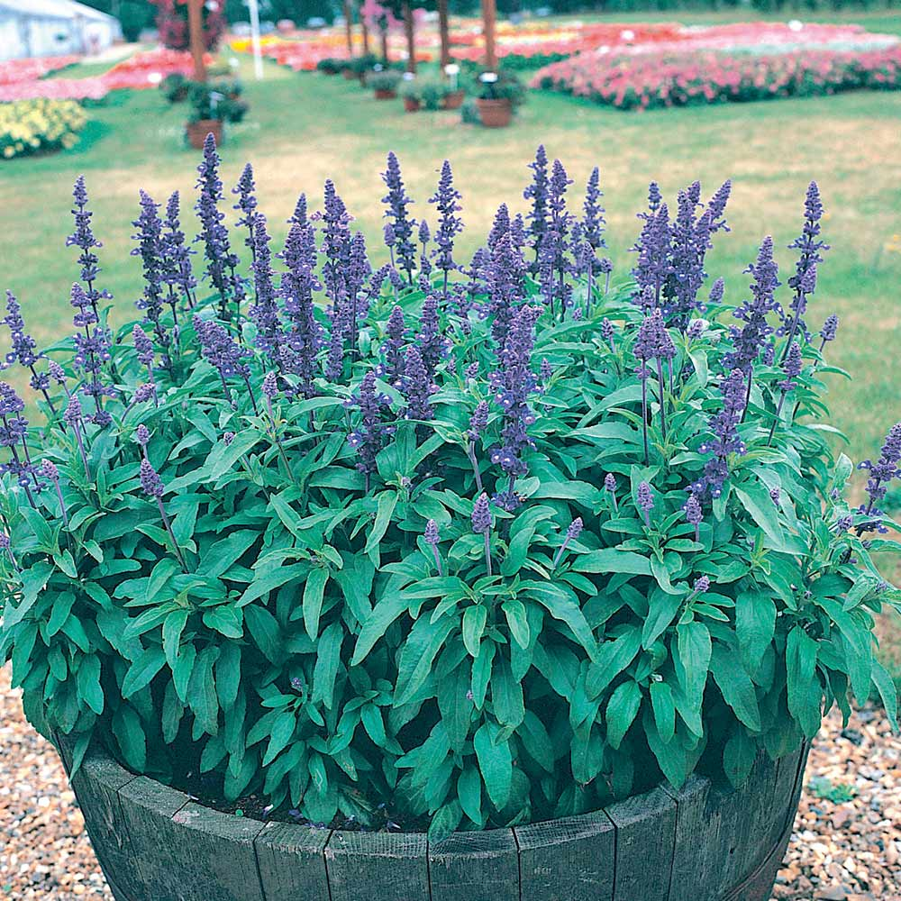
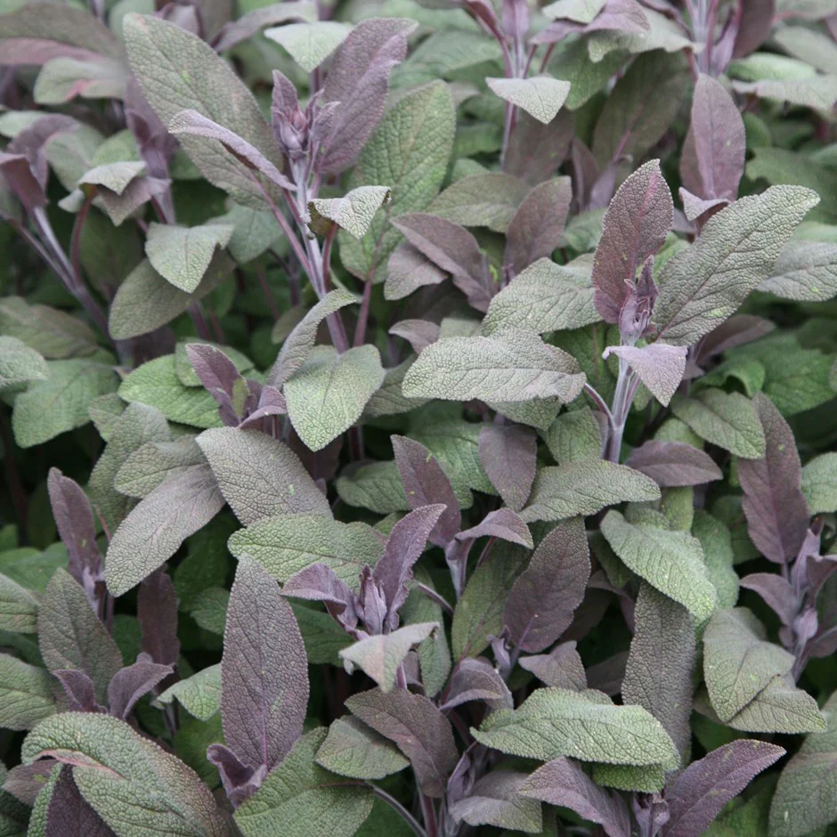
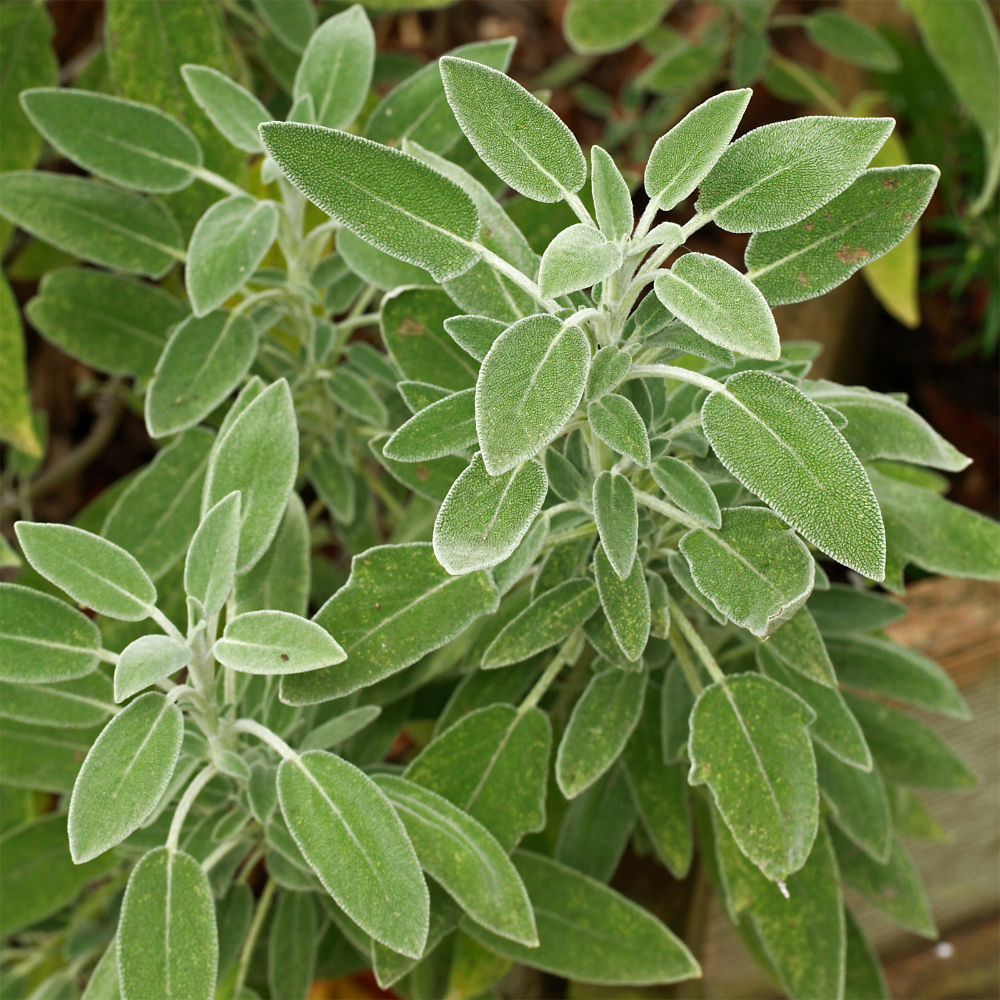
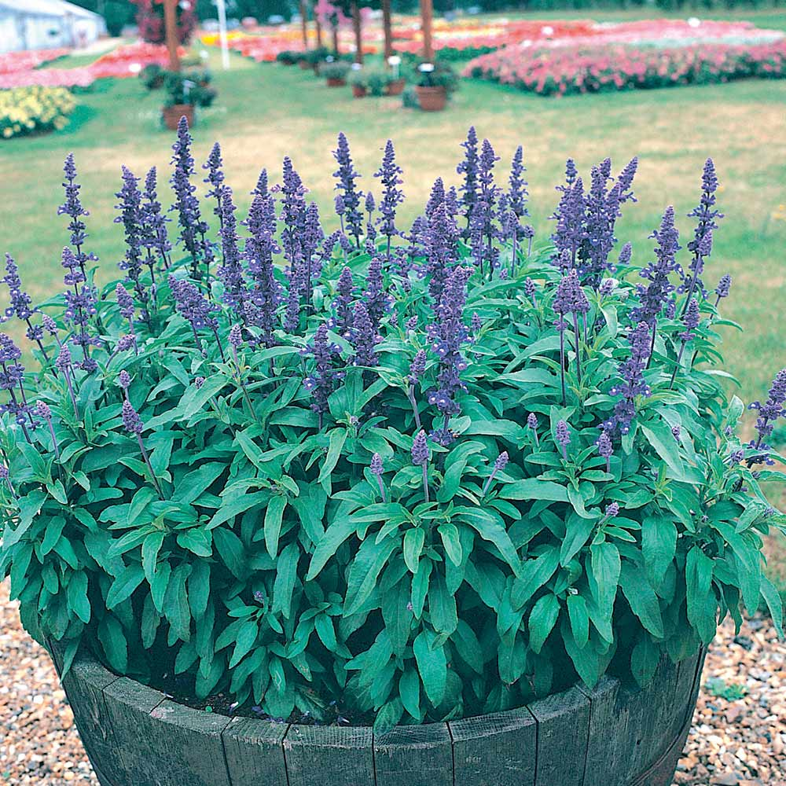
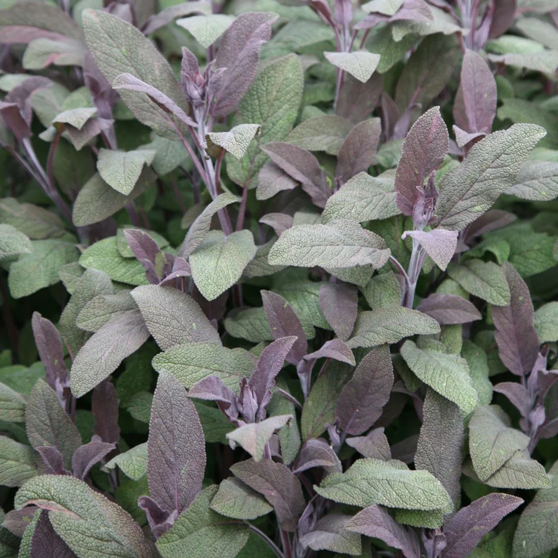
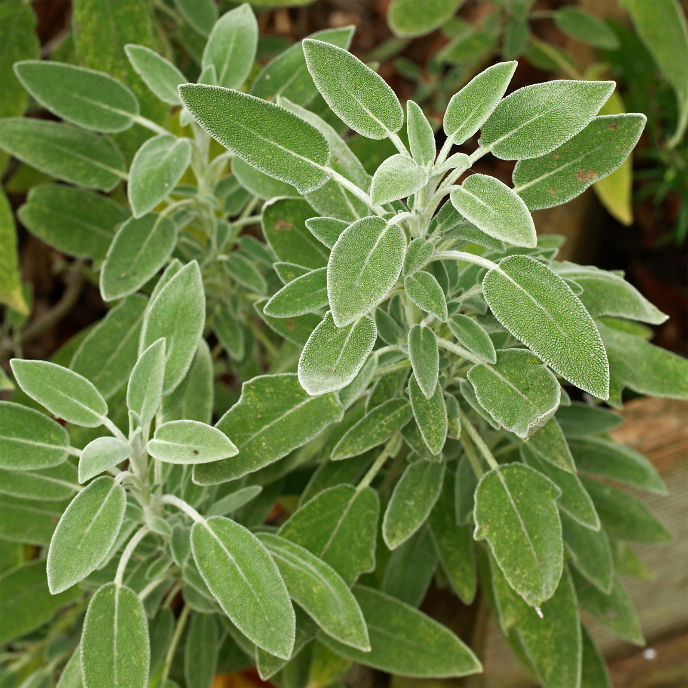

Common Name: Sage, 鼠尾草
Botanical Name: Salvia
 





Other references
Gardenia
Gardeners' World
这是我家后院的sage, 刚买不久，植株不大。以前也养过一盆，放在厨房窗台上，后来长势过于茂盛, 被我给扔到室外闲置了。我一直知道它叫sage, 最近才知道中文名居然是”鼠尾草”。此草在饮食和医药上都有重要功效，为啥取了这么一个中文名？难道是因为它的拉丁属名 Salvia？发音确实有点像”鼠尾”。。。 鼠尾草是多年生草本植物，叶片呈灰绿色长圆形，叶片底部有白色绒毛，颜色略显白。不同品种的鼠尾草还有叶子还会夹杂不同的颜色。花朵有白色，紫色，粉色或者更加普遍的薰衣草花色。雌雄同株，靠昆虫授粉繁殖。
- 鼠尾草/sage原产于地中海地区，灌木状植株，可以长到2英尺（大约70厘米）。喜欢阳光充足，排水良好的土质。鼠尾草多用于烹饪和医疗。近代研究表明，鼠尾草甚至可以治疗 阿尔茨海默/老年痴呆症。
- 人们用鼠尾草作为食用香料至少有2000年了，新鲜的鼠尾草不耐高温，所以最好在煮菜的后期加入菜肴。干燥的鼠尾草气味更加浓厚，可以用来煮汤煮肉。
- 鼠尾草的拉丁名字是“Salvia”，来自“salvare”，代表”拯救，治疗”。鼠尾草有抗菌功能，早在古希腊古罗马，人们就用它来给肉类保鲜。古罗马人还用鼠尾草治疗喉咙痛，伤口流血，蛇咬伤，溃疡，潮热。从新鲜鼠尾草叶子挤出的汁水可以缓和昆虫咬伤的疼痛。鼠尾草也可以增强记忆力。爱美女士请注意，鼠尾草参入沙拉中享用有养颜美容的功效。花可以泡茶，能够消除体内油脂。